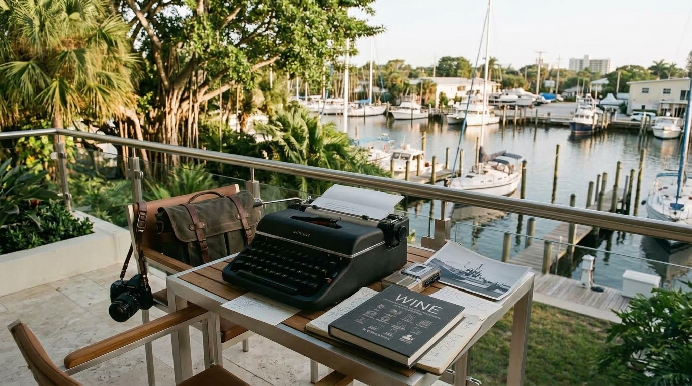
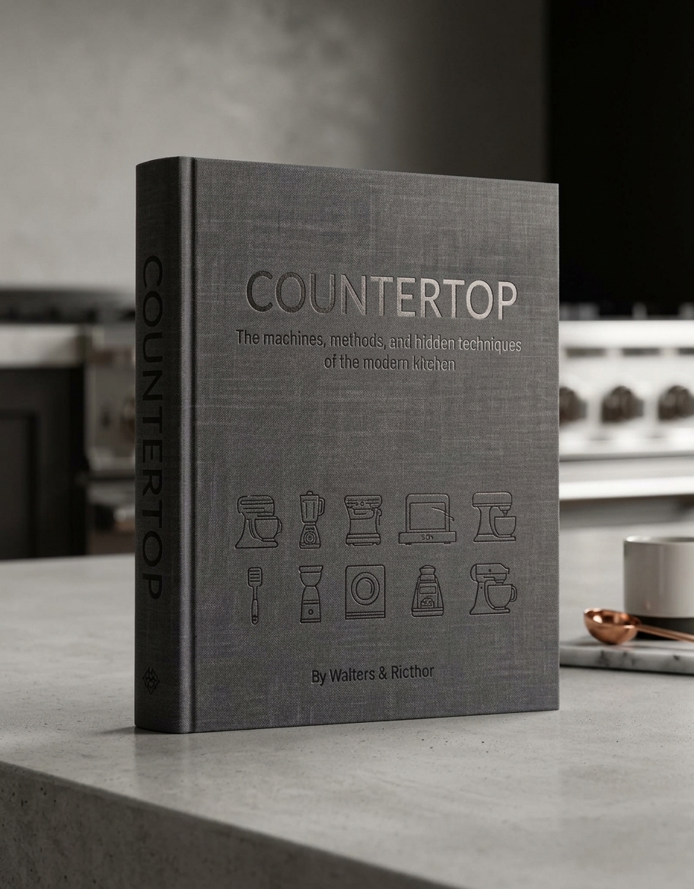
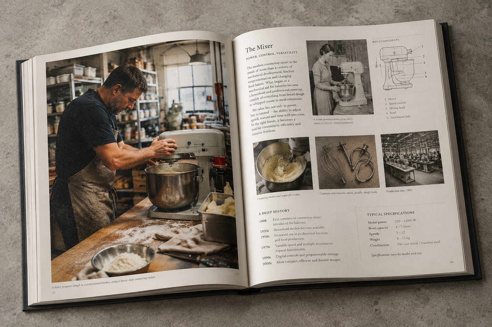
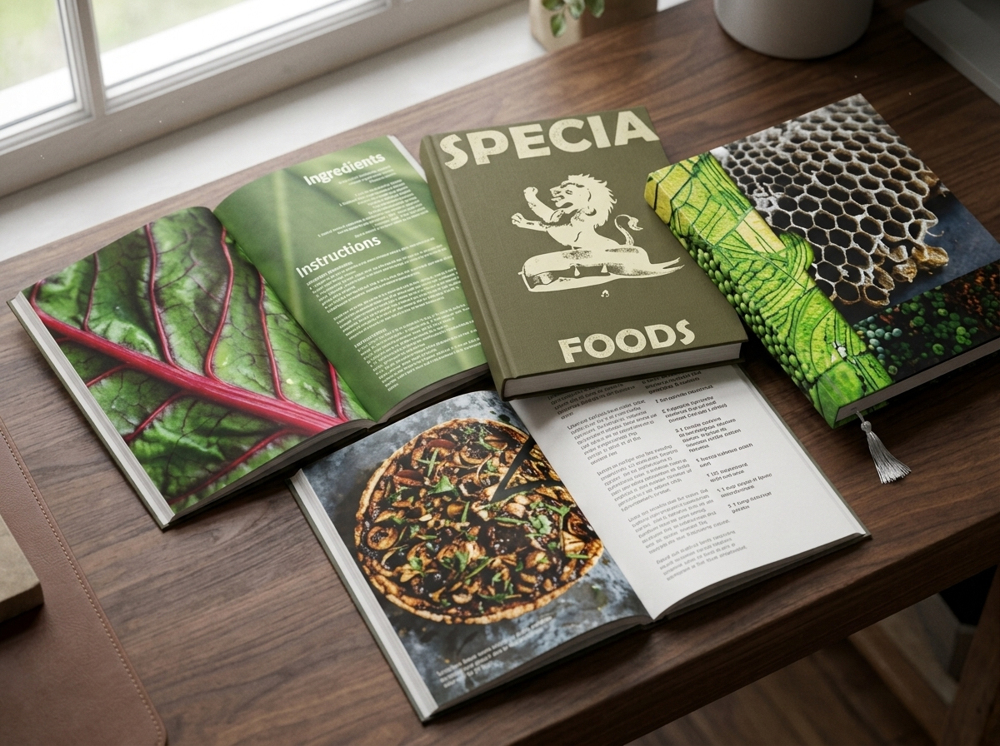
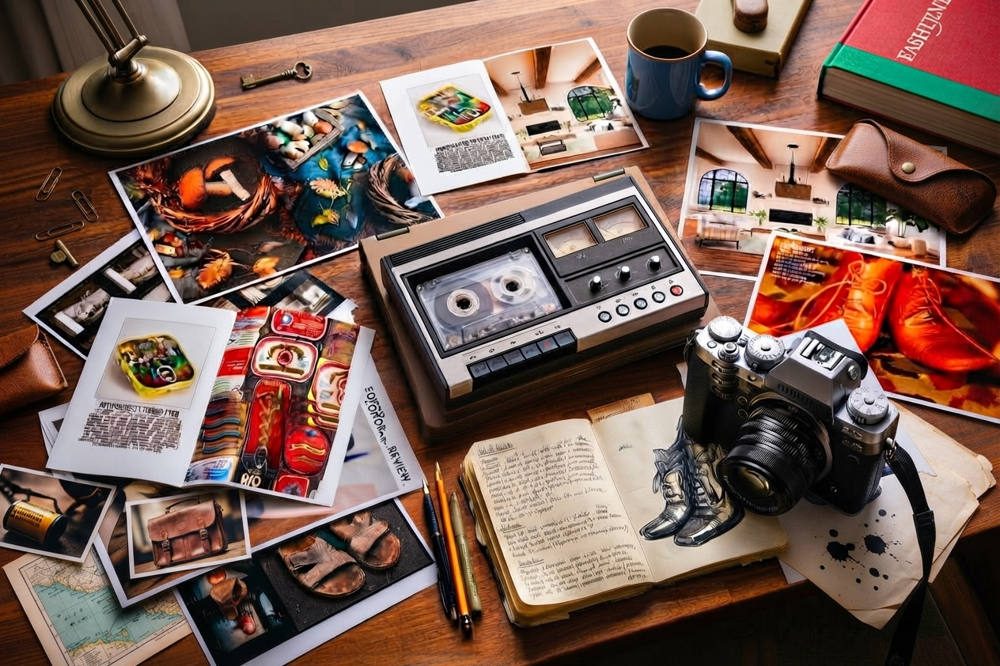

Something people already encounter, use, wear, inhabit, make or depend upon.

GrüvType — Independent Publishing / Field Reporting
Books about
the material world.
We publish substantial illustrated books about the things, places and environments people value, use and live with—and the knowledge, craft, history and human worlds behind them.
The Publishing House
Everything has a material history worth knowing.
A garden. A countertop machine. A boat. A room. A bottle of wine.
An American-made chair. An axe. A garment. A house.
A place where something is made.
We look for things people already encounter, value or depend upon
but whose histories, materials, techniques and accumulated knowledge
remain largely invisible.
Then we go into that world and make the book that lets you see the whole thing.
Editorial Position
A tradition of
looking closely.
GrüvType belongs to a tradition of publishing that treated the ordinary world
as worthy of serious attention. People at work. Places as they actually are.
Objects, materials and processes seen at close range.
Not as advertising. Not as decoration. As evidence.
LIFE
People / Work / Moment
National Geographic
Place / Material / World
GrüvType carries those instincts into the contemporary physical book: documentary photography, field reporting, material evidence, useful knowledge and the pleasure of discovering that something familiar is much larger than it first appeared.
The Difference
The subject
comes first.
Not a catalog.
We do not begin with a collection of participants and build a subject around them.
Not a reference book.
We are not simply organizing existing knowledge. We are investigating a living world.
Not advertising.
Participation does not determine the editorial subject, argument or outcome.
A subject-first book.
We identify the world, enter it, investigate it, and then find the people,
objects and places that belong inside it.
What Makes a GrüvType Subject
You already know it.
You just don't know the whole story.
The best subjects begin with familiar territory and open into a much larger world.
History, materials, machinery, vocabulary, people or practices that are not immediately visible.
The reader sees the familiar differently and leaves knowing something worth keeping.
Enough evidence, history, human knowledge and unexpected paths to sustain a real book.
Books in Development
Books about worlds
you can enter.
We choose the subject first. Then we go into it—finding the makers, companies, designers, institutions, archives, objects and working places that belong inside.
01 / AMERICAN CULTURE & SYSTEMS
American Game
The games, machines, places and objects Americans have built around play: from dice, Skee-Ball and pinball to arcades, casinos, personal computers, consoles and the extraordinary machines built to play them. A visual record of American game culture, from the things we played with to the worlds we build around them.
Book Program
02 / GARDEN & CULTIVATION
Garden
The material world of cultivation: soil, water, trees, stone, tools, nurseries, greenhouses, irrigation, landscape construction, planting, maintenance, estates, botanical collections and the people, makers and trades that make gardens possible.
Book Program
03 / ARCHITECTURE & INTERIORS
Finish
The material world of the finished interior: crown moldings, baseboards, flooring, tile, stone, plaster, paint, wallcoverings, cabinetry, hardware, doors, hinges, handles, switch plates, plumbing fixtures, lighting and the trades, manufacturers and techniques behind the surfaces people live with.
Book Program
04 / MATERIAL WORLD & WATER
Boat
The material world of boats: hulls, engines, navigation, electronics, materials, interiors, yards, tools, repair, restoration and the people who build, maintain and live with them.
Book Program
05 / FOOD & TECHNOLOGY
Countertop
The machines and hidden techniques of the modern kitchen: mixers, grinders, ovens, blenders, espresso machines, fermentation, extraction, pressure, induction and the unexpected things serious users discover machines can do.
Book Program
06 / FOOD & CULTURE
American Wine
Grapes, vineyards, soils, fermentation, cellars, barrels, bottles, closures, equipment, regional methods and the people who carry wine knowledge forward.
Book Program
07 / SOUND & TECHNOLOGY
American Sound
The machines, materials and people behind recorded sound: microphones, recording, amplification, speakers, headphones, radio, studios, records, tape, electronics, industrial design and the American companies that helped build the listening world.
Book Program
08 / AMERICAN MAKING
American Furniture
Forests, factories, machinery, upholstery, materials, regional manufacturing, designers, family companies, contract production and the continuing story of making furniture in America.
Book Program
09 / TOOLS & MAKING
Tools & Making
Axes, planes, saws, chisels, files, braces, squares, vises, looms, presses, engraving systems and the specialized tools, instruments and working systems used to shape wood, metal, stone, clay, fiber, leather, paper and other materials. From hand tools and workshop equipment to the apparatus of jewelry, weaving, papermaking, ceramics and other forms of making, the volume examines how people transform material into useful and made things.
Book Program
10 / MAINTENANCE
Repair
Diagnosis, parts, tools, improvisation, repair shops, technicians, manuals, restoration and the knowledge that exists outside the original factory.
Book Program
11 / AMERICAN AUTOMOBILE
Auto
Parts, garages, mechanics, tools, tires, fabrication, restoration, racing, customization, dealerships, roads and the independent knowledge that grew beyond the factory.
Book Program
For Companies & Institutions
What do you get?
Participation creates a defined place inside the publication itself, together with a small number of finished books for institutional use. Additional copies may be acquired at participant wholesale.
Finished Books
A small allocation of the finished edition for internal use,
important customers, dealers, showrooms, events and other selected
relationships. Additional copies are available to participants at
wholesale rather than retail.
A Place in the Record
Where you genuinely belong to the subject, your people, place, objects,
history or knowledge may become part of the field record. The value is
not simply inclusion, but being situated within a larger record of how
the subject is practiced and understood.
Customer & Trade Use
A substantial physical object for customer, dealer, designer, architect,
collector and other professional relationships where a book carries
more weight—and has a longer life—than ordinary promotional material.
Additional Material
Where separately agreed, selected photography, interviews, archival
material or other documentary assets may be licensed for your own use.
Participation does not require disclosure of proprietary formulas, confidential processes, customer information or unreleased material. We work with what is appropriate to document and publish, and company- supplied material is handled under agreed terms.
The editorial relationship remains independent. Participation does not buy pages, favorable treatment, product placement or control of the finished book.
The Larger World
What sits
behind the thing.
The object is often only the visible edge of a much larger world. We enter that world and follow the connections until the larger system becomes visible.
Objects
The things themselves, examined closely and understood in relation to how they are made and used.
Materials
The physical substances that give a world its character.
Making
Factories, workshops, kitchens, farms, studios, garages, nurseries and the people
who know how things actually come into being.
Places
Buildings, rooms, landscapes, workplaces and environments where the subject becomes real.
Design
Decisions about form, function, proportion, material and use.
Knowledge
Vocabulary, techniques, traditions, inventions and accumulated expertise.
Editorial Method
We follow the thing
until the world appears.
This is field reporting: research first. Then fieldwork. Then the objects, people, photographs, documents and unexpected connections that make the subject legible.
Research
History, terminology, chronology, archives and primary sources.
Fieldwork
Workshops, factories, kitchens, vineyards, ateliers, garages, nurseries,
farms and other places where the subject exists.
Objects
Tools, machines, materials, packaging and finished things as physical evidence.
Photography
Original documentary photography showing things as they are made, used, maintained and handled.
Primary Evidence
Manuals, catalogs, labels, drawings, photographs, documents and surviving records.
Knowledge
The people whose expertise cannot be reduced to a specification.
The Unexpected
Forgotten techniques, unusual uses, obsolete objects and discoveries that make the familiar unfamiliar again.
Material Worlds
Every product has
a world behind it.
A manufacturer may possess decades of knowledge that never appears on a product page.
A designer may work with techniques that disappear from a campaign.
A garden may contain centuries of accumulated knowledge that becomes invisible once
the landscape is finished.
GrüvType goes looking for that larger world.
Plants, soil, water, stone, tools, nurseries, greenhouses, landscape construction, estates and the knowledge of cultivation.
Manufacturing, design, materials, finishes, rooms and the people who make them possible.
Machines, ingredients, preparation, preservation, extraction, makers and working knowledge.
Appliances, equipment, instruments, materials, industrial design and the systems around them.
Participation
The book comes first.
The people inside it matter.
Once a publication has been conceived, we enter its world and identify the people, makers, companies, designers, institutions and collections that belong to its subject.
Some open doors to the field. Some contribute knowledge, access, archives or objects. Others participate in the publication itself. Editorial participation and publication support do not determine the editorial subject or outcome.
Interviews, access, historical knowledge, objects, facilities and archives.
Support associated with the research, photography, design, production and publication of the work.
Finished books for libraries, archives, collections, educational settings and institutional history.
The Physical Book
Not content.
A book.
A GrüvType book is a field report you can keep: substantial, illustrated,
carefully designed and intended to be read, handled, shelved and returned to.
It is not a brochure disguised as a book. It is not a catalog assembled
around advertising inventory.
The physical object is where the research, photography, reporting and
accumulated knowledge become something you can actually live with.


Countertop — a GrüvType publication in development. Interior spread: documentary photography, history, objects and technical knowledge.
Production note. The Countertop cover and interior shown here are original GrüvType designs. Cover concepts are developed by hand and translated into fixed production layouts; interior spreads are developed through original editorial design and page composition. Generated visual environments and material textures are used only to present these designs as physical publication objects. They are presentation mockups, not documentary photographs of an existing printed edition and not substitutes for the underlying editorial, design or photographic work.
The Record
The record is larger than the book.
A GrüvType publication is not limited to the printed page. Where the subject calls for it,
the record may include moving image, sound, interviews, process documentation, archival
material and other forms of evidence.
These materials are developed as part of the research rather than added as decoration.
In some cases, selected film, audio or documentary material may also be commissioned
or licensed separately.

Custom Books & Editions
Actual books / Research / Design / Physical Production

Field Audio and Video
Original Photography / Long-Form Audio / Micro-documentary / People / Process
Record note. The books and documentary photographs shown in this section are actual works and original photographic material. Their presence here represents completed physical and documentary work rather than conceptual publication mockups.
Inquiries
Have a world
worth putting
in a book?
We are interested in people, companies, designers, developers, makers, collections, places and archives whose knowledge belongs inside one of our publication subjects—and in new subjects with enough depth, readership and material evidence to become books.
publisher@p1lab.net